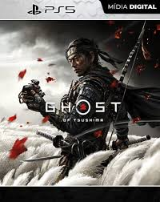
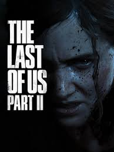

Peter Parker, já veterano, prende o Rei do Crime, mas acaba enfrentando o Doutor Octopus e o Sexteto Sinistro, que espalham um vírus mortal em Nova York. Peter salva a cidade, mas perde a Tia May no processo. Nesse meio tempo, o jovem Miles Morales é picado por uma aranha especial e ganha poderes. Enquanto Peter viaja, Miles fica sozinho como o herói da cidade. Ele precisa impedir uma guerra entre a empresa corrupta Roxxon e o grupo terrorista Underground, liderado por sua amiga de infância, Phin. No fim, Miles domina seus poderes elétricos e se firma como o segundo Homem-Aranha oficial de Nova York.

No Japão de 1274, o samurai Jin Sakai sobrevive à invasão mongol na ilha de Tsushima. Para salvar seu povo e libertar seu tio, o Lorde Shimura, das mãos do impiedoso General Khotun Khan, Jin precisa abandonar o código de honra samurai. Ele assume a identidade do "Fantasma", usando táticas de medo e furtividade para travar uma guerra de guerrilha contra os invasores, tornando-se um herói para o povo e um traidor para as tradições de sua casta.

Vinte anos após uma pandemia fúngica devastar a civilização, Joel, um sobrevivente amargurado, é contratado para contrabandear Ellie, uma garota de 14 anos, para fora de uma zona de quarentena militarizada. Ellie é imune à infecção, o que a torna a única esperança para a criação de uma cura. O que começa como um serviço de rotina atravessando os Estados Unidos transforma-se em uma jornada brutal de sobrevivência, onde a relação entre os dois evolui de estranhos cautelosos para um vínculo profundo de pai e filha. No segundo jogo, cinco anos depois, a paz em sua comunidade é destruída por um ato de violência terrível, levando Ellie a uma busca implacável por vingança em Seattle, onde as linhas entre herói e vilão se apagam conforme ela enfrenta as consequências das escolhas de Joel.